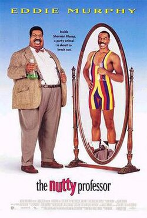

The Nutty Professor
The Nutty Professor is a 1996 American science fiction comedy film starring Eddie Murphy. It is a remake of the 1963 film of the same name, which starred Jerry Lewis, which itself was a parody of Robert Louis Stevenson's 1886 novella Strange Case of Dr Jekyll and Mr Hyde. The film co-stars Jada Pinkett, James Coburn, Larry Miller, Dave Chappelle, and John Ales. Filming began on May 8, 1995, and concluded on September 8, 1995. The original music score was composed by David Newman.
Directed by: Tom Shadyac
Written by: David Sheffield
Based on: The Nutty Professor 1963 film
Produced by: Brian Grazer
Starring: Eddie Murphy
SHOWING TIMES:
CINEMA 2
FRIDAY: 17:00
SATURDAY: 15:00
SUNDAY: 13:00